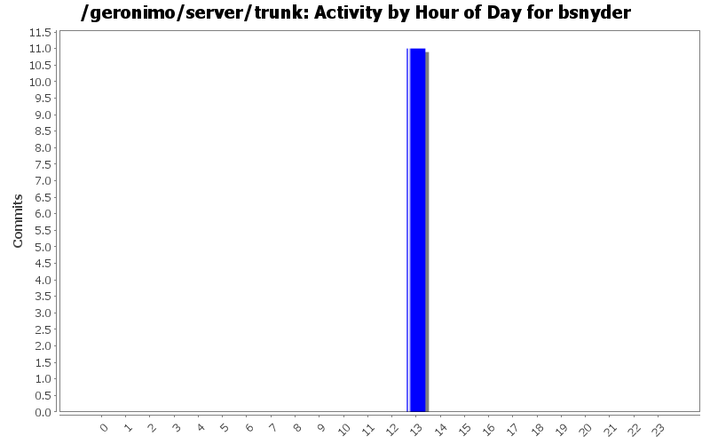
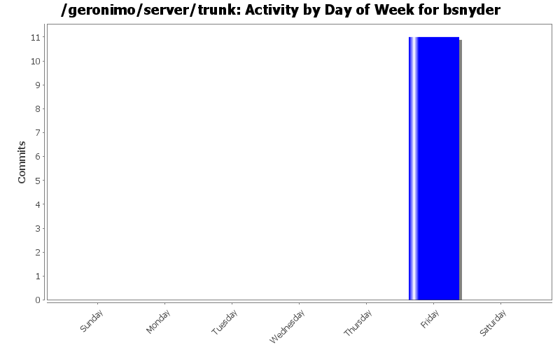
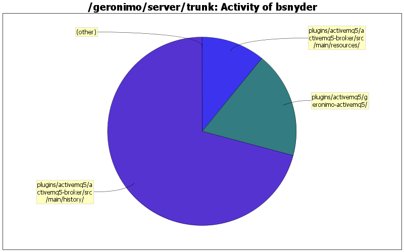

| Directory | Changes | Lines of Code | Lines per Change |
|---|---|---|---|
| Totals | 11 (100.0%) | 55 (100.0%) | 5.0 |
| plugins/activemq5/activemq5-broker/src/main/history/ | 1 (9.1%) | 39 (70.9%) | 39.0 |
| plugins/activemq5/geronimo-activemq5/ | 1 (9.1%) | 10 (18.2%) | 10.0 |
| plugins/activemq5/activemq5-broker/src/main/resources/ | 1 (9.1%) | 6 (10.9%) | 6.0 |
| plugins/activemq5/geronimo-activemq5/src/test/java/org/apache/geronimo/activemq/ | 2 (18.2%) | 0 (0.0%) | 0.0 |
| plugins/activemq5/geronimo-activemq5/src/main/java/org/apache/geronimo/activemq/management/ | 2 (18.2%) | 0 (0.0%) | 0.0 |
| plugins/activemq5/geronimo-activemq5/src/main/java/org/apache/geronimo/activemq/ | 2 (18.2%) | 0 (0.0%) | 0.0 |
| plugins/activemq5/activemq5-broker/src/main/plan/ | 2 (18.2%) | 0 (0.0%) | 0.0 |

GERONIMO-4337 - Upgrade to activeMQ 5.1.0
55 lines of code changed in 11 files: